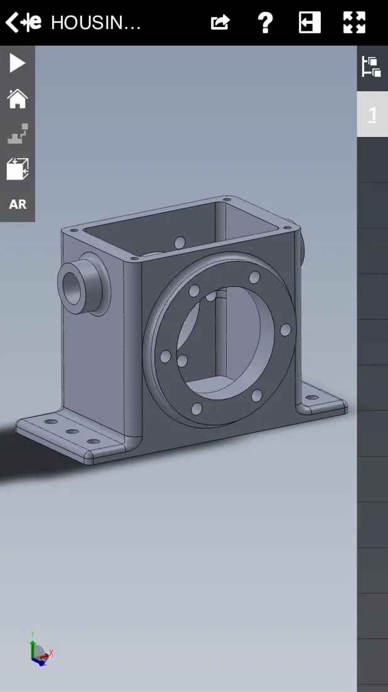
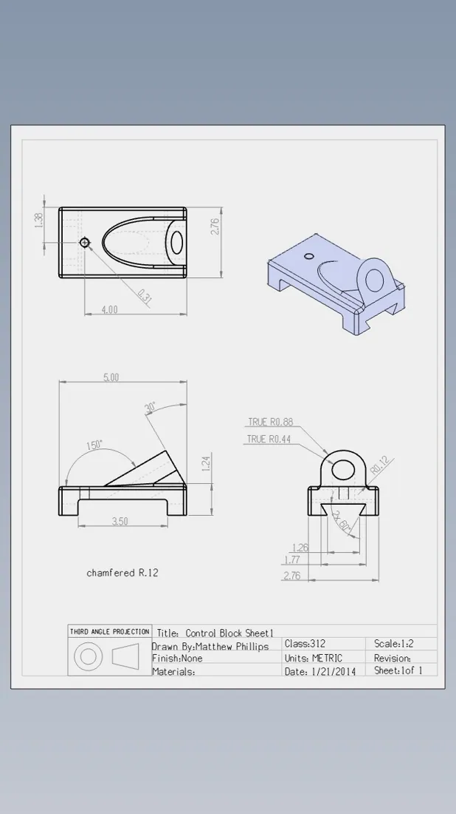
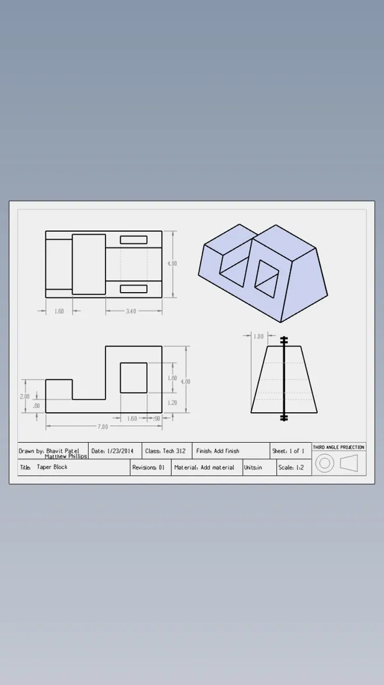

Northern Illinois University
Undergraduate Engineering Research · 2012–2013Participated in a three-person research team investigating aluminum-beam damage using vibration, infrared thermography, and ultrasonic approaches.
Chicago, Illinois · Professional profile
Engineering Technician & CAD Drafting
Industrial Management and Technology graduate with archived SolidWorks drawing work, AutoCAD familiarity, manufacturing exposure, and undergraduate engineering research experience.
Participated in a three-person research team investigating aluminum-beam damage using vibration, infrared thermography, and ultrasonic approaches.
Supported manufacturing operations and production-quality activities.
Contributed to project proposals and drawing-related coordination; work was project-based rather than continuous full-time employment.



Northern Illinois University
B.S., Industrial Management and Technology
Original archived drawings are coursework-era examples. Individual authorship varies by sheet; see the portfolio's attribution notes.
This page highlights experience relevant to this job category. For detailed qualifications, refer to the linked resume.
Read the complete built on precision. resume below, right on this page. No download required.